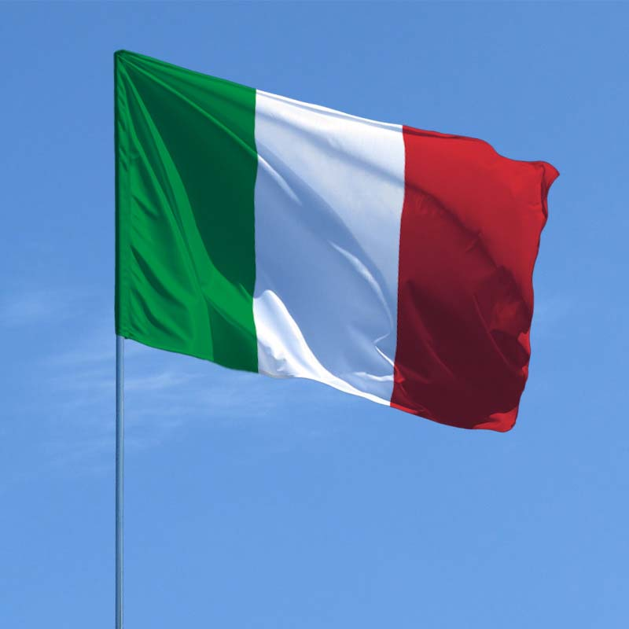

СТРАВА 1-Лазання
паста з макаронів-лазання
Лазанья - улюблена страва італійців нарівні з піцою. Це свого роду запіканка по-італійськи. Однак, щоб її спробувати, необов'язково їхати в Італію. Приготувати лазанью можна просто вдома.
Сучасна лазанья готується, як правило, з 6 шарів тіста, при цьому на кожен шар тіста кладуть м'ясний фарш, гриби, овочі, а зверху — тертий сир і кілька шматочків масла. Для лазаньї італійці частіше всього використовують такі сорти сиру, як рикота і моцарела.